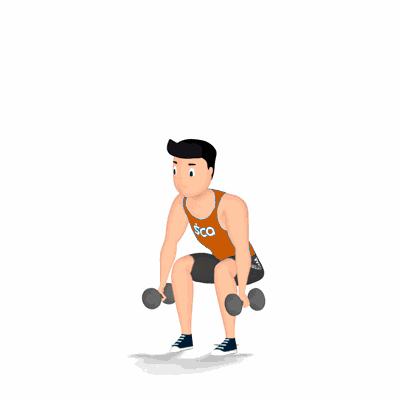

Agachamento com Halter

Exercício para fortalecimento e hipertrofia dos músculos da coxa e glúteos. Considerado um dos melhores exercícios para os músculos das pernas e da metade inferior do corpo.
Ficha Técnica
Tipo: Musculação
Grupo Muscular: Perna
Aparelho: Nenhum
Músculos: Nenhum
Como realizar
- Pegue um haltere com as duas mãos, manter os braços estendidos e posicione o peso à frente;
- Posicione os pés separadamente em uma largura semelhante à dos ombros;
- Coluna reta e abdome contraído, desça o corpo flexionando os joelhos até que a coxa fique em um ângulo de 90 graus em paralelo ao solo;
- Os joelhos não devem ultrapassar a linha dos pés;
- Com a força das coxas, empurre o corpo novamente para cima retornando à posição inicial;
- Repita os movimentos, conforme o número de repetições orientado pelo professor.
 RC STORE
RC STORE